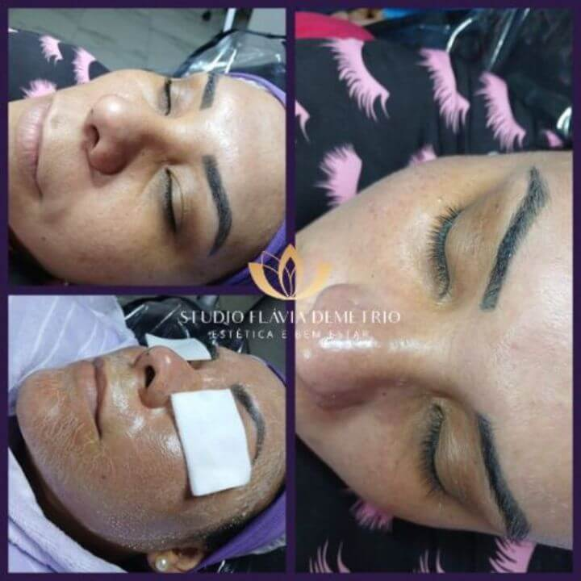
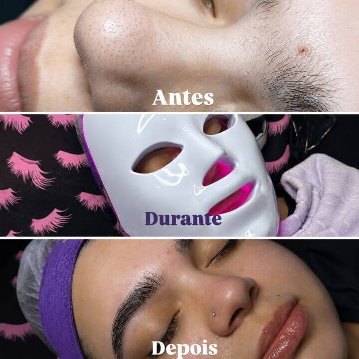
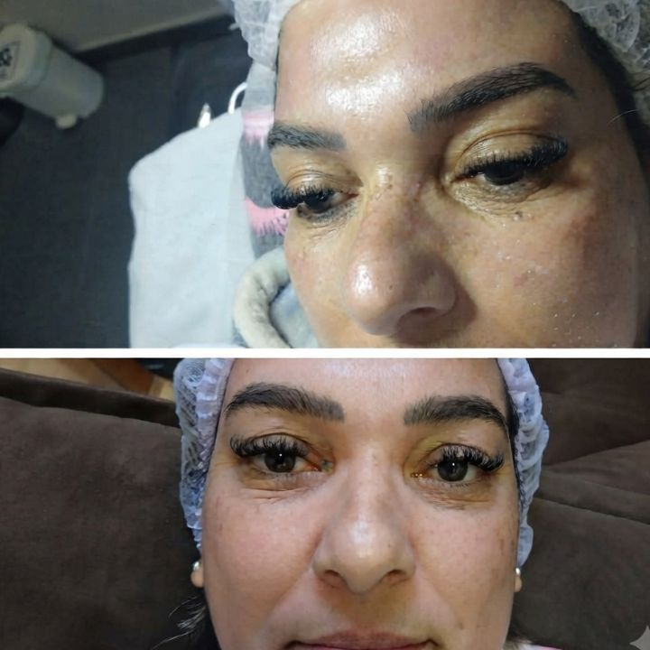
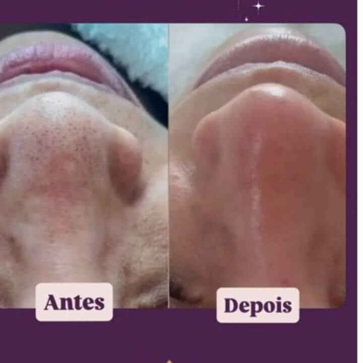
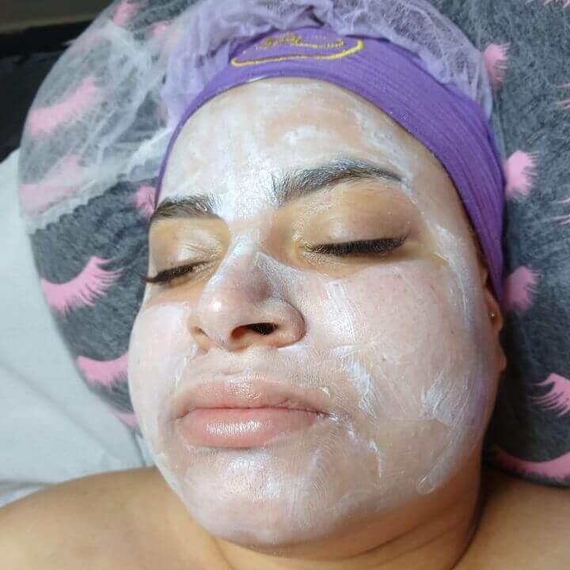
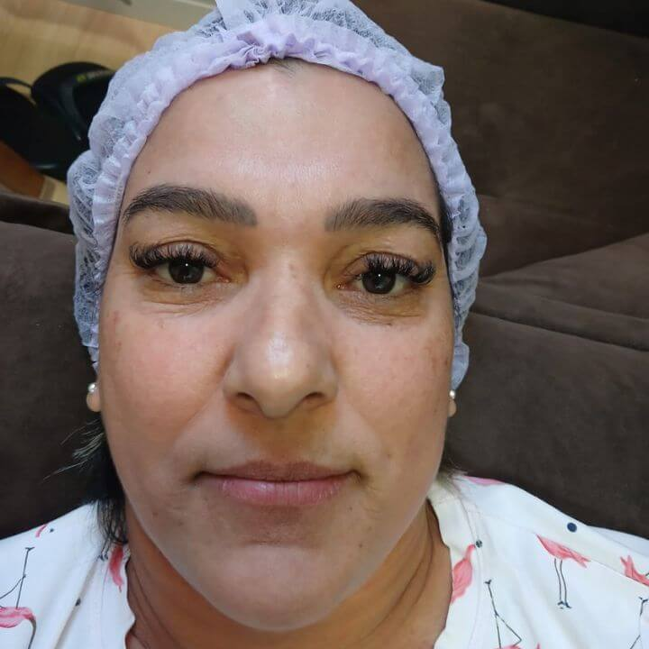
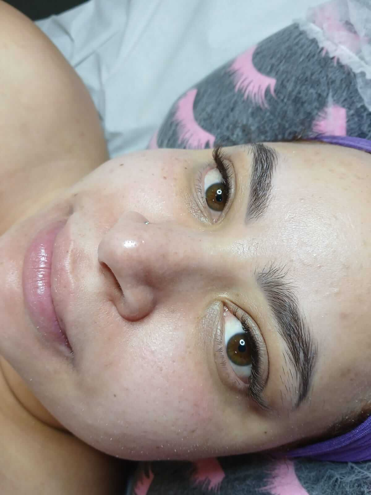

Antes e depois da limpeza de pele em Paulicéia, São Bernardo do Campo





Sua pele está com cravos, excesso de oleosidade ou aquela sensação de que precisa de um cuidado especial? No Studio Flávia Demétrio, você encontra limpeza de pele em Paulicéia, São Bernardo do Campo, com atendimento personalizado de acordo com as características da sua pele.

Studio Flávia Demétrio
Ao longo do dia, sua pele fica exposta à poluição, suor, oleosidade, maquiagem e resíduos de produtos. Mesmo com os cuidados em casa, algumas impurezas podem se acumular.
A limpeza de pele profunda é um procedimento estético que auxilia na higienização da pele e na remoção de células mortas, cravos, oleosidade excessiva e impurezas, deixando a pele com uma aparência mais limpa, leve e renovada.
Eu sou Flávia, profissional de estética, e realizo cada atendimento com atenção às necessidades e características da sua pele. No Studio Flávia Demétrio, em Paulicéia, São Bernardo do Campo, o atendimento é personalizado para proporcionar um momento de cuidado e bem-estar.
Cuide da sua pele com um atendimento pensado para você.
Agendar minha limpeza de pele
A limpeza de pele pode ser procurada por diferentes motivos. Algumas pessoas querem cuidar da oleosidade, outras desejam remover cravos ou simplesmente reservar um momento para cuidar do rosto.




O Studio Flávia Demétrio está localizado em Paulicéia, São Bernardo do Campo – SP. Se você mora em Paulicéia ou em bairros próximos e está pesquisando por limpeza de pele perto de mim, entre em contato para saber mais sobre o atendimento.
Ver localizaçãoO valor da limpeza de pele em Paulicéia, São Bernardo do Campo, pode variar de acordo com o tipo de procedimento e as necessidades da pele. Para saber o valor atualizado e consultar os horários disponíveis, entre em contato com o Studio Flávia Demétrio pelo WhatsApp.
A limpeza de pele pode auxiliar na remoção de cravos e impurezas, de acordo com as características da pele e a avaliação realizada durante o atendimento.
Sim, pode fazer parte dos cuidados de pessoas com pele oleosa. A frequência deve ser avaliada individualmente.
O tempo pode variar conforme as etapas realizadas e as necessidades da pele.
A limpeza de pele pode fazer parte de uma rotina de cuidados. A frequência depende das características de cada pele e da avaliação individual.
A sensação durante o procedimento pode variar de acordo com a sensibilidade da pele e as etapas realizadas.
A limpeza de pele em São Bernardo do Campo é realizada no Studio Flávia Demétrio, localizado na região da Paulicéia. O atendimento é voltado para quem deseja cuidar da pele, remover impurezas e melhorar sua aparência. Atendemos clientes de regiões próximas, como Taboão, Anchieta, Assunção, Jardim do Mar e Vila Caminho do Mar. Entre em contato para saber mais sobre a limpeza de pele e agendar seu atendimento.
Reserve um momento para cuidar de você. Consulte o valor atualizado e verifique os horários disponíveis no Studio Flávia Demétrio.
Agendar pelo WhatsApp